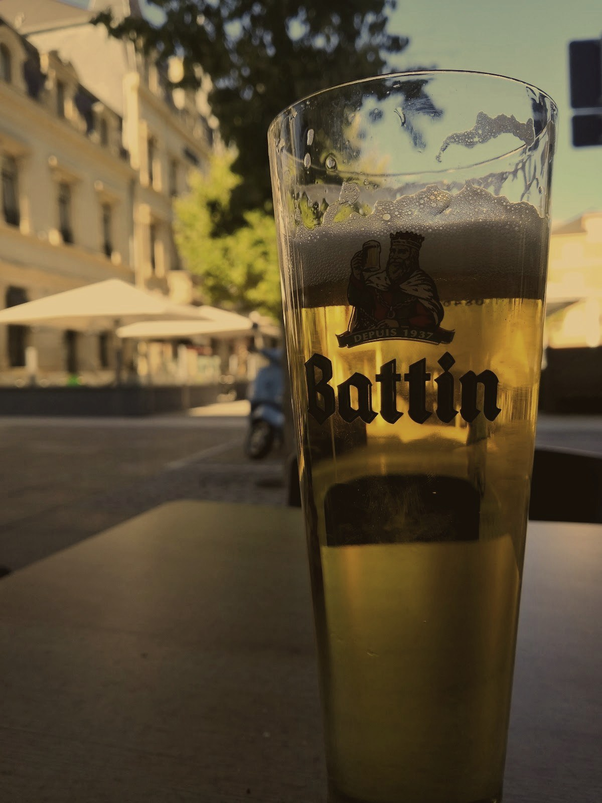
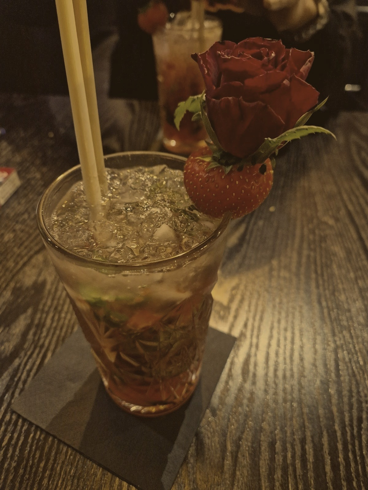
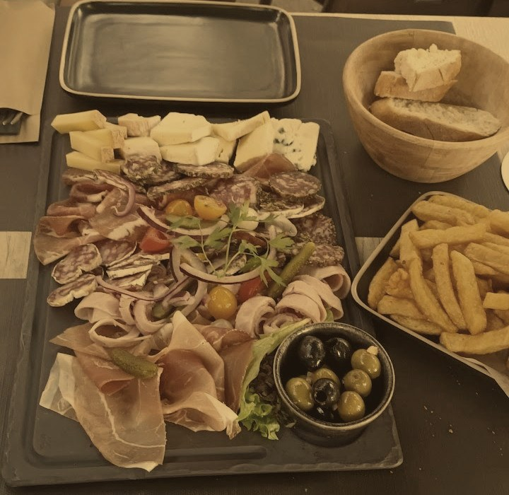
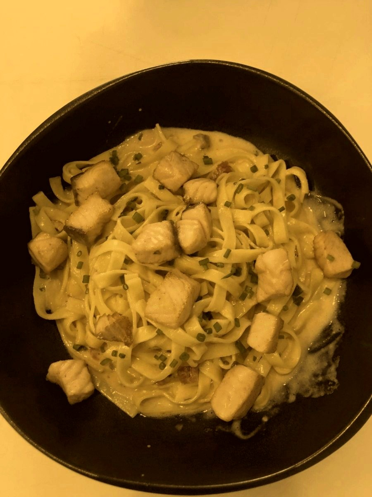
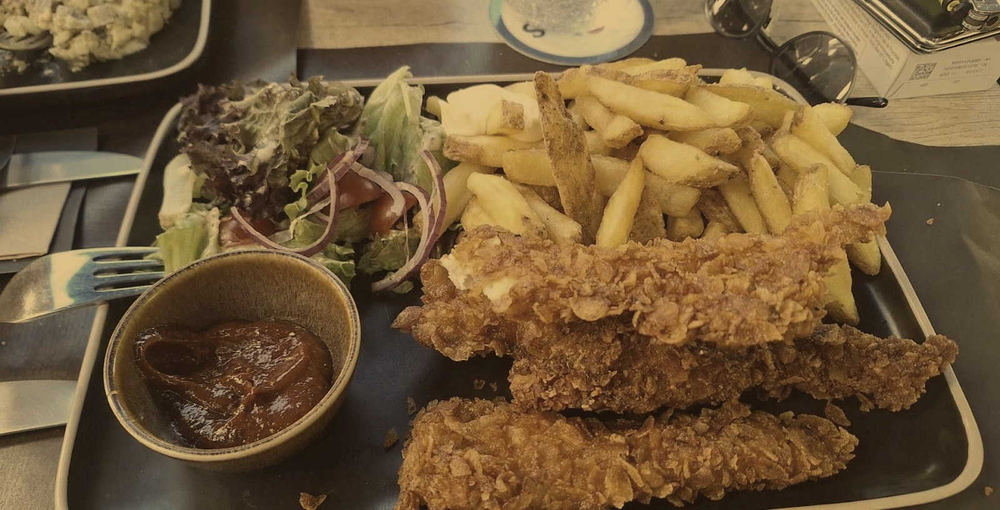

D'Walzstrooss
BistroBar · Differdange
Bar, terrasse et cuisine bistrot au cœur de Differdange — sur la Walzstrooss, la rue du laminoir, là où l'acier a fait la ville.
Sur la rue du laminoir.
« Walzstrooss » — la rue du laminoir — porte le nom du vieux Differdange sidérurgique : la ville qui a longtemps vécu de ses aciéries. La maison en a fait son nom et son enseigne, une cheminée dessinée aux couleurs du pays.
On y vient pour un verre en terrasse, un cocktail bien fait, ou un plat de bistrot — une adresse de quartier, sans façon.
Une Battin, à l'ombre.
La terrasse donne sur la rue J.-F. Kennedy — un verre de Battin, une bière luxembourgeoise servie depuis 1937, ou un cocktail bien fait (Gin Mum, Jack Daniels Honey), entre les façades du vieux Differdange.

De la cuisine bistrot, sans chichi.
Planches à partager, pâtes du jour, plats généreux — une cuisine simple, pensée pour accompagner un verre entre amis.

Charcuterie et fromages à partager, pâtes du jour au saumon, poisson pané et frites — un aperçu de ce qui sort de la cuisine un soir ordinaire.


Une cuisine du marché, qui change chaque mois.
La carte suit les saisons et tourne au fil des mois. Voici quelques plats représentatifs de ce qui sort de la cuisine.
Plats et prix affichés en salle.
Passer nous voir.
51, rue J.-F. KennedyL-4599 Differdange
La terrasse donne directement sur la rue J.-F. Kennedy, entre les façades du vieux Differdange.
Ouvrir dans Google Maps →